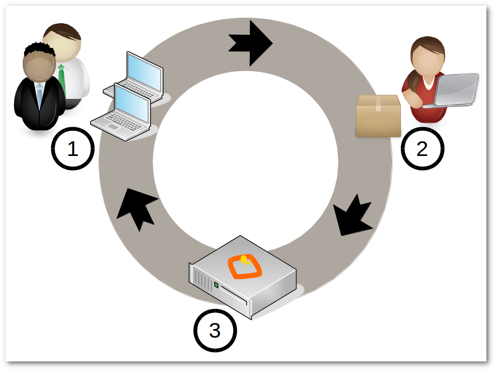

PARTE 1
INTRODUCCIÓN
Gestión de la Configuración Software
Nada es permanente a excepción del cambio.
-- Heráclito de Éfeso.
Estamos acostumbrados a actualizar periódicamente nuestras aplicaciones: los sistemas se hacen obsoletos rápidamente, aparecen nuevas tecnologías, hay errores que son resueltos, surgen nuevas necesidades. Sin importar en qué momento del ciclo de vida del sistema nos encontremos, el sistema cambiará, y el deseo de cambiarlo persistirá a lo largo de todo el ciclo de vida.1
Por tanto, el cambio en el software es inevitable y es deseable que ocurra.
Es inevitable porque los desarrolladores cometemos errores y es mediante una modificación como los corregimos. A este tipo de cambios los llamamos correctivos.
Por otro lado, el cambio es deseable ya que a menudo queremos incorporar nuevas funcionalidades al software o mejorar aquellas que ya existían. Mediante los cambios evolutivos es como mejoramos el software.
El cambio genera confusión e incertidumbre y se produce desde que concebimos, construímos y también mientras mantenemos un proyecto software.
El gran reto reside precisamente en gestionar de forma controlada dichos cambios usando alguna estrategia que los favorezca y facilite.
De esto trata precisamente la Gestión de la Configuración Software (GCS), un proceso de la Ingeniería del Software que identifica, hace seguimiento y controla cada uno de los cambios que se producen en los sistemas.
Objetivo
El objetivo de la GCS es conservar la integridad de los sistemas frente a los cambios.
Un sistema será íntegro frente al cambio si:
- Mantiene correctamente las relaciones entre los distintos cambios a medida que se van produciendo (el típico problema de dependencias entre elementos).
- Permite la auditoría de cambios (conocimiento del estado de un sistema al que se le han ido aplicando cambios sucesivamente).
El proceso
El proceso de la GCS es un conjunto de actividades que nos permitirá garantizar dicha integridad, y que podemos resumir en:
- Petición de cambio.
- Cambio.
- Liberación.
Petición de cambio
Cuando se nos reporta un error o una petición de mejora, lo primero que hacemos es identificar el Elemento de Configuración Software (ECS) al que se refiere.
Un ECS es cualquier objeto software sometido a la GCS. Puede ser un manual de usuario, una especificación, un conjunto de datos para realizar tests, una aplicación, una librería, incluso las herramientas que se usan para realizar dichos cambios, etc.
Una vez identificado el ECS se registra la petición de cambio.
Las herramientas típicas para registrar y hacer el seguimiento del
cambio son los denominados gestores de proyectos (Redmine, Bugzilla,
Tracker, etc.)
Cada petición de cambio es analizada más tarde pudiendo ser aceptada o rechazada. Si es rechazada, se avisa al informador y se cierra la petición. Si es aceptada, se asigna la petición a alguien para que realice dicho cambio.
Cambio
El cambio es la actividad que modifica el ECS, generando una nueva versión del ECS.
En esta actividad se utilizan un conjunto muy diverso de herramientas, desde procesadores y editores de texto, sistemas de control de versiones, entornos de desarrollo integrados (IDE), depuradores, compiladores...
Liberación
La liberación es la actividad de situar la nueva versión del ECS generada, en un repositorio o almacén para que posteriormente los clientes del ECS puedan acceder a él e instalarlo.
Elemento de Configuración Software
Si observamos como los diferentes proyectos de Software Libre realizan la GCS, vemos que realizan las actividades mencionadas liberando finalmente el código fuente del proyecto en Internet.
Estos proyectos trabajan con distintos tipos de ECS (.png, .txt, .py, .c, .bin, etc.) usando los Sistemas de Control de Versiones, junto con las plataformas de desarrollo colaborativo como sourceforge.net, github.com, etc.
Este código fuente será posteriormente compilado por los mantenedores de las distribuciones GNU/Linux (Fedora, Red Hat, Debian, Ubuntu, etc.), realizando su propia GCS. Pero a diferencia de los primeros, las Distribuciones GNU/Linux sólo trabajan sobre un único tipo de ECS: el paquete, donde introducirán el programa ya compilado.
Este simple hecho permite garantizar la integridad frente a los cambios de forma eficaz y sencilla, como veremos a continuación.
El paquete
Un paquete es un contenedor que encapsula un conjunto de ECS liberados por un determinado proyecto, junto a su metainformación.
Contendrá, por tanto, el programa compilado para una determinada distribución y arquitectura, más un amplio conjunto de información, como puede ser:
- El autor del programa.
- La dirección del repositorio del proyecto.
- La versión del ECS.
- La arquitectura.
- El nombre y dirección e-mail del empaquetador.
- La fecha de empaquetado.
- El nombre del equipo en que se produjo el empaquetado.
- Una descripción corta del contenido del paquete.
- Una descripción larga.
Pero, además, suelen incluir:
-
Dependencias con otros paquetes.
-
Código a ejecutar antes y después de:
- Instalar.
- Actualizar.
- Eliminar el paquete.
Una vez que un mantenedor de una Distribución GNU/Linux ha creado un paquete, lo libera poniéndolo en un repositorio público a disposición de los clientes.
Puesta en producción
Los encargados de aplicar los cambios son los programas denominados
gestores de paquetes tales como yum, zypper o apt.
Un gestor de paquetes es un programa que permite poner en producción los cambios que han sido liberados en los repositorios.
La actualización de un equipo se realiza comparando las versiones de los paquetes instalados con los paquetes de los repositorios públicos, detectando los que han aumentado su versión, resolviendo sus dependencias y finalmente, si no hay conflictos, obtienen desde los repositorios los paquetes necesarios.
Una vez han descargado los paquetes, dan órdenes a los backends
(rpm, dpkg, etc.), para que se produzca la desinstalación de los
paquetes antiguos y la instalación de los nuevos.
Los backends abren el paquete, y grosso modo:
1. Extraen los ficheros del programa copiándolos en el sistema, y ejecutan además el código programado para antes y después de la actualización.
2. La metainformación es extraída del paquete y se almacena en la base de datos del backend.
Decía Ian Murdock, fundador de Debian, que el gran aporte del software libre a la industria, ha sido precisamente la invención del sistema de paquetería (paquete, repositorio, gestor de paquetes).
Y no es para menos, ya que este sistema nos proporciona los dos requisitos necesarios que garantizan la integridad frente a los cambios:
- El control de dependencias, mediante el gestor de paquetes.
- La auditoría, mediante las consultas a la base de datos del backend.
nota
Si estás acostumbrado a instalar programas mediante el típico “./configure, make, install”, tienes que ser consciente que estás rompiendo la integridad frente a los cambios, ya que la base de datos del backend no es actualizada con este procedimiento. Todo lo que no sea instalar programas mediante el gestor de paquetes o el backend, rompe la integridad.
A continuación, se muestra una tabla con las operaciones más comunes que puedes emplear sobre algunos de los gestores de paquetes más conocidos:
| Operaciones Gestores | apt | yum | zypper |
|---|---|---|---|
| Actualizar listado de paquetes disponibles | apt-get update | yum check-update | zypper refresh |
| Actualizar sistema | apt-get upgrade | yum update | zypper update |
| Instalar paquete | apt-get install <pkg> | yum install <pkg> | zypper install<pkg> |
| Borrar paquete | apt-get remove <pkg> | yum erase <pkg> | zypper remove <pkg> |
| Buscar paquete | apt-cache | yum list | zypper search |
| Buscar repositorio de un paquete | apt-cache madison <pkg> | yum whatprovides <pkg> | zypper whatprovides <pkg> |
Veamos ahora las operaciones más comunes que puedes emplear sobre los
backends dpkg y rpm:
| Operaciones Backends | dpkg | rpm |
|---|---|---|
| Instalar fichero de paquete | dpkg -i <file.deb> | rpm -ivh <file.rpm> |
| Borrar paquete | dpkg -r <pkg> | rpm -e <pkg> |
| Paquete que instala el fichero <file> | dpkg -S <file> | rpm -qf <file> |
| Ficheros del paquete | dpkg -L <pkg> | rpm -ql <pkg> |
| Descripción del paquete | dpkg -s <pkg> | rpm -qi <pkg> |
| Paquetes instalados | dpkg -l | rpm -qa |
Administrando escritorios
En todo lo que nos rodea y en todo lo que nos mueve, debemos advertir que interviene en algo la casualidad.
-- Anatole France.
En el capítulo anterior, hemos hablado de la GCS y de cómo las distribuciones GNU/Linux utilizan el sistema de paquetería para garantizar la integridad frente al cambio.
Si tienes un equipo doméstico, todos los cambios producidos y liberados por los distintos proyectos y que hayan sido empaquetados y liberados por tu distribución GNU/Linux, serán instalados convenientemente con el simple hecho de dar la orden al gestor de paquetes para que actualice tu sistema.
Ahora bien, en una organización donde se requiera administrar los escritorios esto no es suficiente, veamos el porqué.
La personalización
La primera dificultad importante a la que se va a enfrentar un administrador, va a ser la de la personalización.
Imagina que tienes que migrar y administrar 1000 equipos a GNU/Linux y que tienes en tu red un servicio NTP, requiriéndose que todos tus escritorios estén con la hora sincronizada con este servicio.
Vas a tener que personalizar el cliente NTP en todos tus escritorios.
Una manera que se suele utilizar es instalar en un equipo una distribución GNU/Linux desde un DVD, editar el fichero de configuración del cliente NTP y configurar la IP (o el nombre DNS) del servidor donde se encuentra el servcio NTP. Después, puedes crear una imagen del disco duro con un sistema de clonado como pueda ser Clonezilla y clonar uno a uno los equipos usando dicha imagen.
Con este método, la personalización inicial reside en dicha imagen, pero sigamos imaginando...
Un día, a mitad de migración, recibes un correo y lees:
"Alberto: El servicio NTP dejará de dar servicio a partir del día 10. En su lugar vamos a disponer de un nuevo servicio, llamado QueHoraEs, que es mucho mejor porque..."
En este momento, ya estarás pensando en los 400 equipos que tienes migrados y te echarás las manos a la cabeza porque es evidente que este sistema de personalización no es adecuado.
nota
La personalización inicial es muy sencilla de realizar, pero un cambio en la personalización puede darse en cualquier momento, y tienes que estar preparado para poder realizarlo.
Gestores de Sistemas
Afortunadamente, existen unas herramientas denominadas Gestores de Sistemas (Systems Management Systems), que pueden ayudarnos en la administración de los escritorios.
Algunos de estos Gestores de Sistemas se centran en la adquisición del estado de los equipos como Nagios, y otros permiten automatizar tareas mediante la ejecución de código en los equipos de manera centralizada como Zenworks, Landscape, chef, puppet, cfengine, ansible.
Los Gestores de Sistemas están muy influidos por las iniciativas realizadas en los sistemas de gestión de redes de telecomunicaciones, pudiendo realizar una o un conjunto de las siguientes tareas:
- Inventario hardware.
- Monitoreado de disponibilidad de servidores y mediciones.
- Inventario e instalación de software.
- Gestión de antivirus y anti-malware.
- Monitoreado de las actividades de los usuarios.
- Monitoreado de la capacidad de los sistemas.
- Gestión de seguridad.
- Gestión de almacenamiento.
- Monitoreado de la utilización y capacidades de la red.
Estas tareas podemos clasificarlas de acuerdo a FCAPS, un modelo y marco de trabajo de red de la gestión de telecomunicaciones de ISO para la gestión de redes. FCAPS es un acrónimo de Fault, Configuration, Accounting, Performance, Security (Falla, Configuración, Contabilidad, Desempeño, Seguridad), que son las categorías en las cuales el modelo ISO define las tareas de gestión de redes.
-
Fault (Fallas): Es un evento que tiene un significado negativo. Su objetivo es reconocer, aislar , corregir y registrar fallos. Puede utilizar análisis de tendencias para predecir errores. Cuando se detecta un fallo o evento, se envía una notificación.
-
Configuration (Configuración): En el proceso de gestión de la configuración, las operaciones diarias son monitoreadas y controladas.
Los objetivos de la gestión de la configuración son:
- Recolectar información.
- Modificar la configuración.
- Generación de reportes
- Gestión de cambios.
Los cambios de Hardware y Software son controlados por este proceso:
- Actualización, Instalación y eliminación de programas.
- Actualización, Instalación y eliminación de equipamiento (impresoras, scaners, memoria, etc.)
Este proceso debe tener en cuenta:
- Permitir acceso rápido a la información de la configuración.
- Facilitar la configuración remota de los dispositivos.
- Proporcionar un inventario actualizado de Software y Hardware.
- Simplificación de la configuración de dispositivos.
- El seguimiento de cambios a la configuración.
-
Accounting (Contabilidad): Su objetivo es reunir las estadísticas de los usuarios.
-
Performance (Desempeño). Recolentando y analizando los datos de rendimiento, el estado general de los sistemas pueden ser monitorizado. Las tendencias pueden avisar de fallos de capacidad o de cuestiones relacionadas con la fiabilidad de los sistemas, antes de que en estos ocurran. Umbrales de rendimiento pueden ser establecidos para lanzar alarmas que serían controladas por la gestión de fallos habitual. Las alarmas se pueden clasificar atendiendo al grado de severidad.
- Security (Seguridad). Se encarga de controlar el acceso a recursos de red. La seguridad de los datos puede ser conseguida con la autenticación, cifrado y permisos, principalmente.
nota
Migasfreee atendiendo a FCAPS, tiene capacidades de Faults, Configuration y Accounting.
Un ejemplo de funcionamiento típico de un Gestor de Sistemas que incorpore tareas de Configuration usaría un lenguaje que especificaría a qué estado se quiere llevar a los equipos, no cómo llegar a ese estado. En nuestro caso, sería algo parecido a esto:
- asegúrate de que el paquete ntp-client está desinstalado,
- asegúrate de que el paquete quehoraes-client está instalado,
- asegúrate de que el fichero de configuración de quehoraes-client es el mismo que el que está en el servidor.
Periódicamente, los clientes se conectarían al servidor para obtener este código que será ejecutado mediante el intérprete propio del Gestor de Sistemas instalado en el cliente.
Este sistema permite automatizar aquellas tareas que realizan a menudo los administradores de sistemas, y aunque algunos Gestores de Sistemas se las ingenian para llevar un control de versiones, mantienen una base de datos independiente a la de los backends de los gestores de paquetes, dejando en entredicho todo lo relativo a la integridad de los sistemas.
Empaquetando la personalización
En AZLinux usamos otro método: empaquetamos siempre la personalización.
Para el caso del cliente “QueHoraEs”, crearíamos el paquete azl-quehoraes-client2 con la siguiente información:
- Dependencias: quehoraes-client
- Obsoletos: ntp-client
-
En el script de postinstalación escribiríamos el siguiente código:
En el fichero de configuración del cliente QueHoraes, modificar el valor de la entrada “server=” por la IP del servidor QueHoraEs
¡Listo! Con esto queda garantizada la integridad frente al cambio de la personalización, aprovechándonos de la integridad que nos proporciona el sistema de paquetería de nuestra distribución GNU/Linux.
Una vez empaquetada nuestra personalización, se hace relativamente sencillo realizar cualquier cambio posterior en ella. Pero crear un paquete desde cero para personalizar una distribución GNU/Linux no es tan fácil, no tanto por la creación del paquete en sí, sino porque la personalización requiere de los conocimientos suficientes sobre el sistema GNU/Linux y sobre la propia aplicación que se personaliza.
nota
Empaquetar la personalización nos asegura la integridad de los sistemas frente a sus cambios.
Date cuenta que no es necesario ningún Gestor de Sistemas para instalar dicha personalización. Sólo necesitas el Gestor de Paquetes, y éste siempre lo tienes disponible en cualquier distribución GNU/Linux.
Niveles de personalización
Las aplicaciones suelen incorporar dos niveles de personalización:
- La del usuario.
- La del sistema (para todos los usuarios del sistema).
La personalización del usuario es prioritaria a la del sistema, siempre y cuando esta última no sea obligatoria.
Es conveniente conocer si la aplicación que vas a configurar incorpora la personalización a nivel de sistema, ya que ésta es la que se tendrá que configurar.
En los casos en que las aplicaciones sólo tengan la configuración a nivel de usuario, o en los casos en los que se requiera, tendrás que recorrer todos los usuarios para aplicar la personalización a cada uno de ellos.
La liberación
Es el segundo problema importante con el que vas a tener que lidiar.
Por un lado, debes independizarte de los repositorios públicos de tu distribución GNU/Linux, por el simple motivo de que no puedes permitir que el control de los cambios que se instalarán en tus máquinas, lo tenga tu distribución GNU/Linux en vez de tu organización.
¿Imaginas que habría pasado en AZLinux cuando OpenSuSE sustituyó OpenOffice por LibreOffice? Cuando los usuarios hubieran encendido las máquinas a las 8:00 de la mañana, se iniciaría la actualización a LibreOffice automáticamente pudiéndose producir muchas incidencias. ¿Funcionaría todo? ¿No es mejor probar LibreOffice en tu organización antes de que se instale en todos tus equipos?
Tener la posibilidad de deshacer un cambio que se haya determinado como no deseado es importante.
Tienes que decidir por ti mismo el software que deben tener tus usuarios y, por tanto, debes tener los gestores de paquetes configurados contra tus propios repositorios de paquetes y gestionarlos de alguna manera.
Además, es conveniente que puedas planificar a quién y cuándo se deben liberar dichos cambios.
Imagina nuevamente el ejemplo de la sustitución de OpenOffice por LibreOffice. Estaríamos hablando de una actualización de cerca de 500 MB por equipo que, multiplicado por todos los equipos de una organización, podría resultar en mucho tráfico de red.
Una ventaja de planificar la liberación es que permite distribuir poco a poco los cambios, de tal manera que, si hay errores, afectará inicialmente a muy pocos equipos, permitiendo actuar de manera más relajada para corregir cualquier incidencia.
Por todo esto, y como los repositorios estándar de las distribuciones no tienen ningún mecanismo de planificación de la liberación, es por lo que decidimos desarrollar migasfree, extendiendo el concepto de repositorio de paquetes al concepto de despliegue: repositorio de paquetes dinámico y planificable.
Despliegue Migasfree
Un despliegue de migasfree es, simplemente, un repositorio estándar más la capacidad de poder especificar, de forma centralizada, cuándo y quién accede a ese repositorio.
Veamos como actúa migasfree en lo relativo a los repositorios:
-
Los cambios que se quieren liberar son empaquetados y subidos a un servidor migasfree.
-
Se crea un despliegue con los paquetes subidos y se establece a quién (atributos de usuario + equipo) y en qué momento se deben aplicar dichos cambios.
-
El servidor migasfree crea un repositorio físico (idéntico al de cualquier distribución GNU/Linux) con dichos paquetes, utilizando las herramientas estándar de creación de repositorios (
createrepopara paquetería RPM odpkg-scanpackagespara paquetería Debian). -
Cuando un cliente migasfree se conecta al servidor envía sus atributos al servidor.
-
El servidor consulta los despliegues para determinar, en función de esos atributos enviados, la lista de los repositorios físicos que tiene el cliente a su disposición y se los envía al cliente.
-
El cliente migasfree configura la lista de los repositorios físicos recibidos desde el servidor en el Gestor de Paquetes.
-
A continuación, el cliente migasfree da instrucciones al Gestor de Paquetes para que se produzca la eliminación, instalación y actualización de los paquetes desde los repositorios físicos.
La GCS en tu organización
En el capítulo anterior, hemos visto el proceso de la GCS en los distintos proyectos de software libre y también en las distribuciones GNU/Linux.
Pues bien, en una organización también debe realizarse el proceso de la GCS.

Proceso GCS en tu organización con migasfree
- Un usuario hace una petición de cambio.
- Un desarrollador programa el cambio de la configuración software dentro de un paquete y lo sube a un servidor migasfree.
- La liberación es realizada por el servidor migasfree a los ordenadores requeridos.
En AZLinux realizamos nuestra propia GCS y vemos como, de nuevo, se repiten las mismas actividades: petición de cambio, cambio y liberación.
Usamos dos tipos de peticiones de cambio:

Peticiones de cambio
-
Actualización de aplicaciones. Si por ejemplo recibimos una petición para actualizar Mozilla Firefox, descargamos desde los repositorios de la distribución la versión deseada. La probamos en laboratorio registrando cualquier información relevante en la petición de cambio. Finalmente, si todo es correcto, se liberan los paquetes a través de un despliegue migasfree planificando su distribución (ver A en el diagrama 'Peticiones de cambio').
-
Personalización de aplicaciones. Se produce por ejemplo cuando llega una petición de cambio para añadir un motor de búsqueda de sinónimos a Mozilla Firefox. Introducimos entonces en un paquete propio de AZLinux (azl-firefox) el código que instala dicho motor de búsqueda y liberamos dicho paquete en un despliegue de migasfree planificando su distribución (ver B en el diagrama 'Peticiones de cambio').
Las herramientas que usamos actualmente en cada actividad son:
-
En la petición de cambio:
- Gestor de proyectos: Redmine
-
En el cambio:
-
En la liberación:
nota
Migasfree nos proporciona, de manera centralizada, conocer el estado, no sólo del servidor migasfree, sino de cada uno de los equipos registrados en el servidor, convertiéndose en una herramienta ideal para hacer una auditoría tanto de software como de hardware.
Beneficios
Los principales beneficios que obtendrá tu empresa, como resultado de aplicar una GCS, serían:
- Reducción del coste de los servicios de desarrollo y mantenimiento.
- Optimización del uso de los recursos.
Y para ti, como administrador:
- Dispondrás de equipos más estables.
- Vas a pasar de ser un administrador que se echa las manos a la cabeza ante cualquier cambio a ser un administrador favorecedor del cambio, ya que dispones de las herramientas para hacer el seguimento y control de los cambios.
- Y, en última instancia, vas a mejorar sustancialmente la resolución de incidencias.
Características de migasfree
Las cosas no se dicen, se hacen, porque al hacerlas se dicen solas.
-- Woody Allen.
El nacimiento de migasfree
En el año 2005, todos grupos políticos del Ayuntamiento de Zaragoza manifestaron por unanimidad, en pleno de gobierno municipal, apoyar las políticas de uso de Software Libre y, en concreto, el fomento de los programas de SL en el entorno de escritorio del empleado municipal. La Dirección General de Ciencia y Tecnología asume, inicia y potencia este importante reto.3
Este proyecto se planificó en tres etapas:
- Primera: Migrar a aplicaciones que presentaban un impacto bajo sobre usuarios y técnicos en el Sistema Operativo actual (por aquel entonces, Microsoft Windows XP).
- Segunda: Migrar la plataforma ofimática Microsoft Office 97 por la suite libre OpenOffice.
- Tercera: Sustituir el SO Windows XP por un sistema operativo basado en Linux. Esta etapa se inició en 2008 y todavía sigue abierta.
Para iniciar la tercera etapa, se tuvieron que realizar los primeros prototipos de lo que llegaría a ser la primera versión de AZLinux. En estos prototipos, la personalización se realizaba manualmente, en un equipo cuya imagen del disco duro nos servía para clonarla en otros equipos y hacer las pertinentes pruebas.
En aquel tiempo, aprendimos a empaquetar y empezamos a introducir nuestra personalización en nuestros propios paquetes. La ventaja frente a la personalización manual era muy significativa.
Con los primeras migraciones reales, nos surgió la necesidad de actualizar nuestros paquetes y, después de probar sin éxito Zenworks for Linux, decidimos crear nuestros propios repositorios de paquetes. Quisimos emular lo que ya estabamos haciendo con los escritorios XP, esto es, distribuir software basándonos en el contexto al que pertenecía un usuario en nuestro LDAP. Con un poco de Bash scripting, en Mayo de 2009, implementamos lo que serían unos repositorios dinámicos que se configuraban en el cliente en función del contexto.
Esto fue, sin duda, una gran idea, pero la gestión de estos repositorios dinámicos era manual y muy propensa a errores.
La gestión de estos repositorios dinámicos recayó en mí, por lo que decidí simplificarla inmediatamente y crear el primer prototipo de migasfree. Dos semanas de programación, en horas no laborales, fueron suficientes para presentar a mis compañeros de trabajo un prototipo, que fue puesto en producción en Junio de 2009.
nota
Una de las ventajas de trabajar con software libre es la facilidad con la que puedes crear proyectos ya que puedes mezclar, como si de piezas de puzzle fueran, diferentes componentes sin preocuparte en exceso del tema de las licencias. Un ejemplo de esto ha sido la incorporación de la funcionalidad de captura del hardware en los equipos. Utilicé el comando lshw y unas pocas líneas de código para adaptarlo a la base de datos de migasfree.
Versiones
El primer prototipo sólo trabajaba con paquetería rpm y gestor de
paquetes yum, y el código bash que se ejecutaba en el cliente se
generaba en el servidor.
Después de usar migasfree un tiempo en producción, vimos que podría ser un buen sistema para otras organizaciones, y mis compañeros me dieron el impulso necesario para publicar el código. Así, durante el verano de 2009, reorganice los menús, limpié un poco el código, e hice que migasfree pudiera trabajar con distintas versiones de SO y de sistemas de paquetería. Fue publicado en github en abril de 2010 y bautizado como "migasfree with fried eggs", porque mis compañeros decían que el logotipo se parecía a un huevo frito. ¡Qué sabrán ellos de Arte!
En Noviembre de 2011, Jose Antonio Chavarría, desarrollador de AZLinux, reescribe y publica el cliente migasfree. Realizó también grandes cambios en la estructura del servidor. Tuvimos que definir la API con la que el cliente y el servidor debían comunicarse. Usamos claves asimétricas para dotar de seguridad al sistema. Esta nueva versión fue denominada "migasfree no trans" supongo que por incorporar un código más "limpio", por decirlo de alguna manera.
Poco a poco, fuimos dotando al sistema de nuevas funcionalidades, y para principios de 2013, Jose Antonio Chavarría cambió la navegación y aspecto del servidor. Esta nueva versión fue denominada "migasfree with chocolate".
En febrero de 2014, liberamos la versión 4 del servidor (migasfree grape edition). Esta versión hace uso de bootstrap con el fin de dotar a la aplicación de un diseño web adaptable a distintos dispositivos. Además, incorpora distintas mejoras de todo tipo. Actualmente es la versíón que utilizamos en AZLinux.
En 2015 nos sumamos a una ola disruptora: docker. Esto nos ha liberado de tener que pelearnos con las dependencias de los componentes que utilizamos en el servidor y de tener que publicar los paquetes que generabamos para distintas distribuciones GNU/Linux (utilizamos versiones de componentes que aún no han sido liberados y esto nos creaba auténticos quebraderos de cabeza).
Con docker hemos conseguido colocar el servidor y sus dependencias en un contenedor virtual (un debian) que puede ejecutarse en cualquier servidor GNU/Linux. Esto nos ha proporcionado una flexibilidad y portabilidad para ejecutar el servidor de una forma muy simple tanto en un equipo físico como en la nube.
Características
- Migasfree es simple, y hacemos esfuerzos por mantenerlo así. Tendemos a lo que denominamos gestión cero, es decir, procuramos que la gestión de añadir nuevas entradas en migasfree no requiera ninguna tarea administrativa.
- Está basado en la arquitectura cliente/servidor.
- Es seguro. Las comunicaciones entre cliente y servidor están firmadas con claves asimétricas.
- Es adaptable. Puedes programar tus propias
fórmulaspara obtener losatributosde los ordenadores y usuarios según tus intereses. - Es Software Libre licenciado bajo la GNU Public License.
- Almacena tanto el inventario software y hardware de los equipos, permitiendo hacer consultas sobre ellos. Almacena también información de los equipos tales como sus atributos, sincronizaciones, migraciones que se han realizado, etc.
- Consultas. Puedes programar consultas contra la base de datos de migasfree.
- Gestión de errores. Los errores que se producen en los equipos son enviados al servidor y almacenados, permitiendo hacer su seguimiento.
- Gestión de fallas. Puedes programar código que será ejecutado en los clientes con el fin de obtener información de los equipos.
- Alertas. Permite conocer en tiempo real el estado del sistema facilitando al administrador su trabajo.
- Estadísticas.
Principales componentes empleados
- Lenguaje de programación Python.
- Django un framework de desarrollo web.
- Servidor web Nginx.
- Chaussette como servidor WSGI
- Base de datos Posgresql.
- Información Hardware: Lshw.
-
Primera ley de la Ingeniería de Sistemas, Software Configuration Management, Bersoff, Henderson & Siegel, Prentice-Hall, 1980 ↩
-
En AZLinux empleamos como nombre de paquete el prefijo "azl-" más el nombre del paquete que queremos personalizar. ↩
-
Eduardo Romero Moreno, Migración Escritorio Software Libre, 2011 ↩